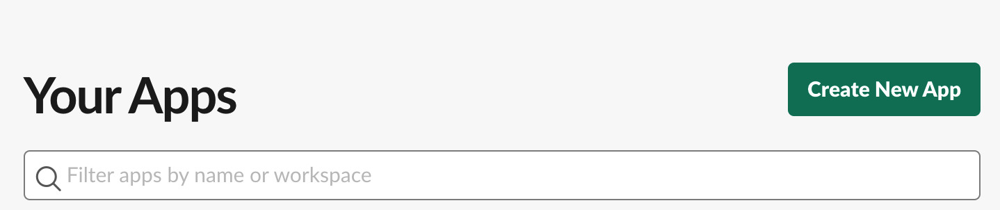
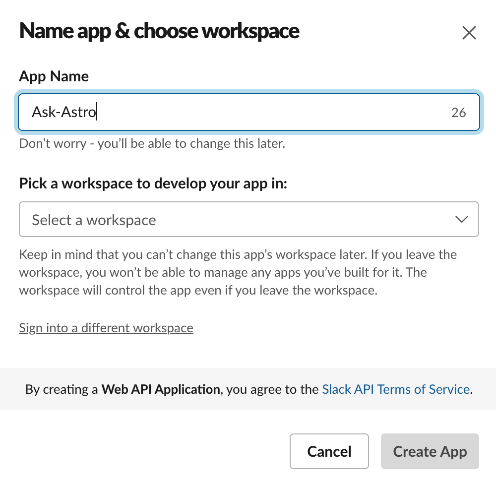
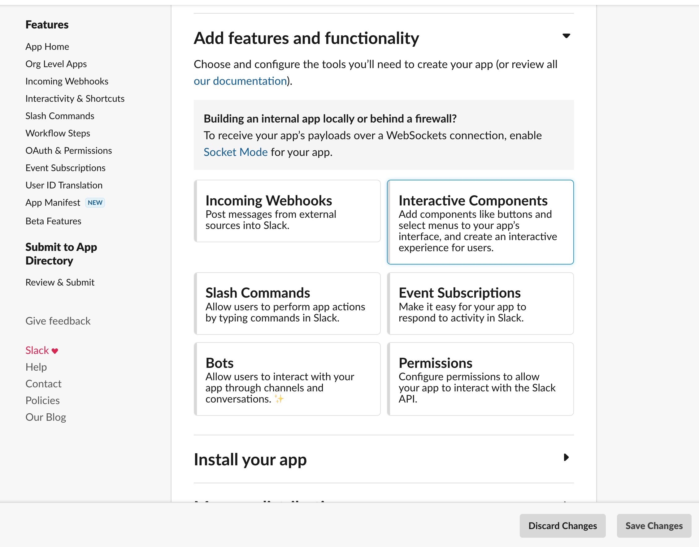
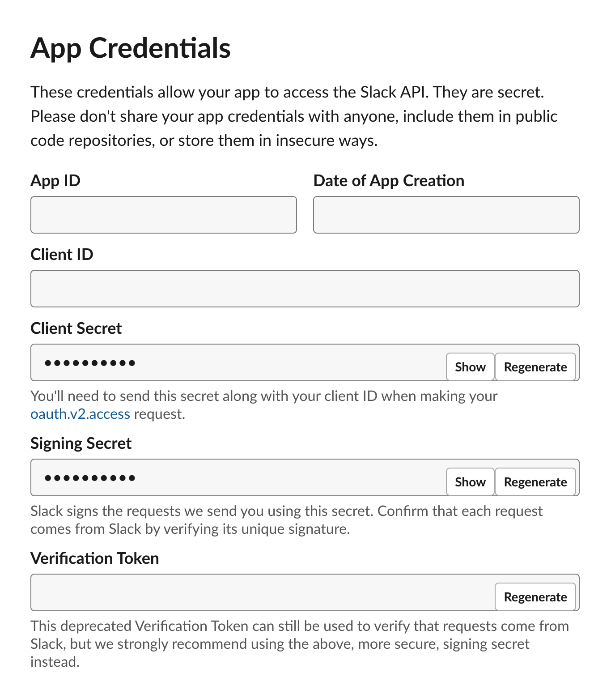
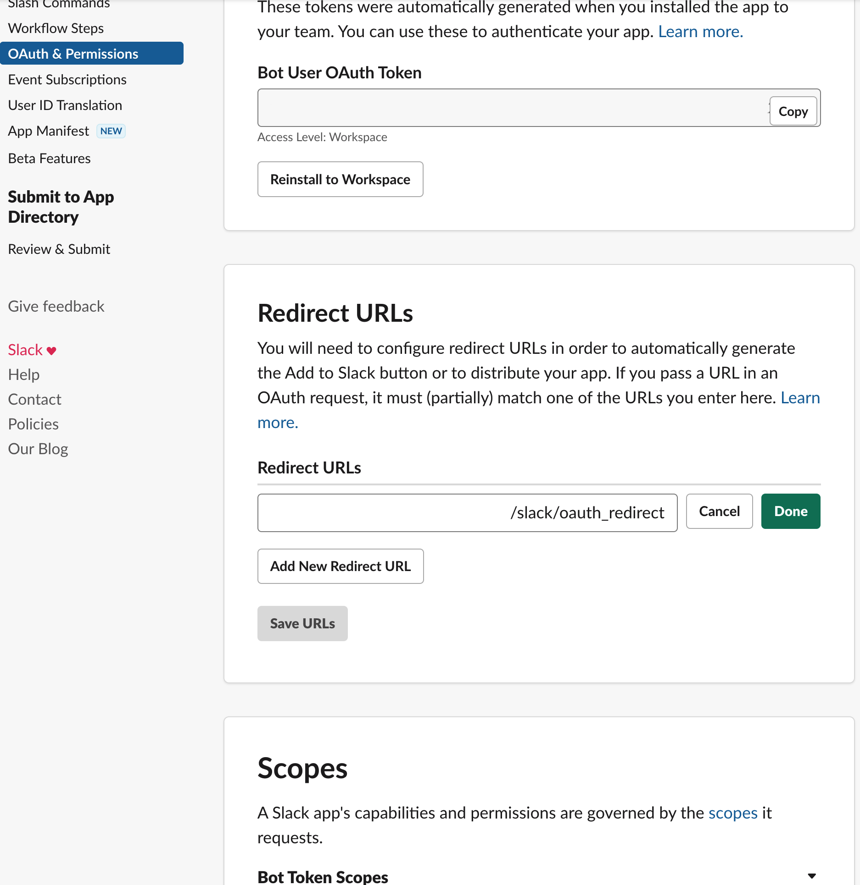
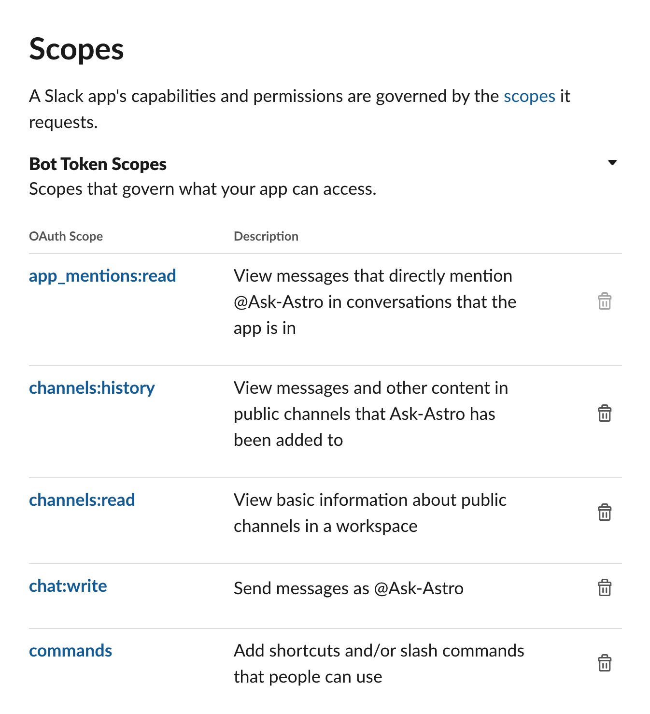
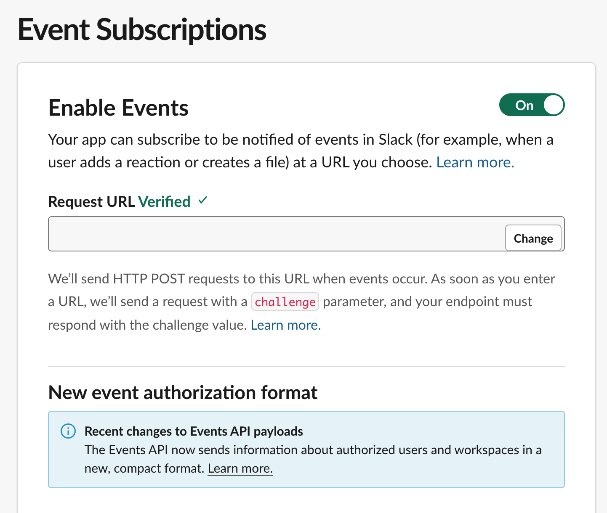
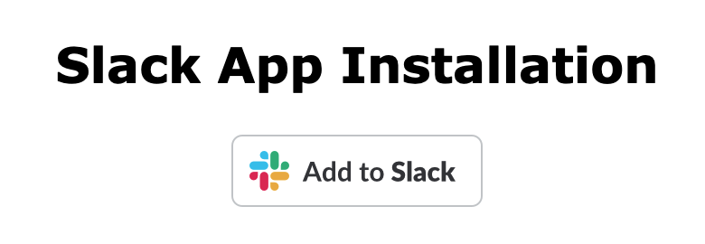

Create an ask-astro Slack bot#
Go to
https://api.slack.com/apps.Click Create New Apps. 
On the Create an app page, click From scratch.
Name the app and pick a Slack workspace  After creating the Slack app, Slack redirects you to the home page of this app. 
Scroll down, to find the credentials for the ask-astro API backend 
SLACK_CLIENT_ID: Client IDSLACK_CLIENT_SECRET: Client SecretSLACK_SIGNING_SECRET: Signing Secret
Start the ask-astro API backend by using a reachable host, such as ngrok.
Go to the OAuth & Permissions page.
Add
https://<ask-astro api backend host>/slack/oauth_redirectto Redirect URLs. Add the following scopes.
commands
app_mentions:read
channels:read
channels:history
groups:read
groups:history
chat:write
reactions:read
reactions:write
users:read
users:read.email
team:read
im:history
mpim:history
files:read 
Go to Event Subscriptions page for your App. (
https://api.slack.com/apps/<API_ID>/event-subscriptions?)Set Request URL to
https://<ask-astro api backend host>/slack/events. Go to the Interactivity & Shortcuts page.
Set Request URL to
https://<ask-astro api backend host>/slack/events.Go to
https://<ask-astro api backend host>/slack/installand click Add to Slack. 
The ask-astro bot is now available to use in your Slack work space!